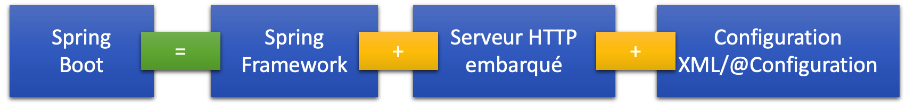

Framework Spring
le présent, Spring Boot
IUT de Vannes Licence Professionnelle Developpement de Logiciels Innovants et Securises (S2IMA)
Gustavo BOBEFF - 2023
Introduction
- « Spring simplifié par Spring »
- le développeur est concentré sur le code métier
- simplifié parce que :
- le résolution des dépendances Spring est plus simple
- il y a un serveur d’applications intégré
- application client ou web: même méthode de lancement
- convention over configuration (full)
- Les caractéristiques de Spring Boot peuvent être résumées comme suit :
- l’intégration directe d’applications de serveur Web/de conteneur comme Apache Tomcat ou Jetty sans utiliser de fichiers WAR (Web Application Archive)
- la configuration simplifiée de Maven grâce à des POM (Project Object Models) « Starter »
- lorsque c’est possible, la configuration automatique de Spring
- la mise à disposition de capacités non fonctionnelles telles que des outils de mesure ou des configurations délocalisées
Architecture
- Architecture
-

- Les composants clés dans une application Spring-Boot sont :
- Spring Boot Starters : La principale responsabilité d’un starter est de regrouper un ensemble de dépendances communes dans un composant simple (par exemple spring-boot-starter-web pour embarques toutes les dépendances pour le développement d’une application web).
- Spring Boot AutoConfigurator : Permet de réduire drastiquement la configuration de base nécessaire dans une application (voir définition de l’annotation @SpringBootApplication).
- Spring Boot CLI : Outil en ligne de commande qui facilite la création et exécution des applications Spring Boot.
- Spring Boot Actuator : Met en place la structure de base pour la génération des métriques sur l’application.
Création d'une application Spring Boot
- Trois méthodes :
- Spring Initilizr https://start.spring.io/
- Spring Boot CLI
- wizard IDE
- ... ou à la main ? ;-)
Création d'une application Spring Boot : Spring Initilizr
- Création d’un projet de base depuis https://start.spring.io/
- Import dans un IDE (IntelliJ)
Création d'une application Spring Boot : Spring Boot CLI
- Documentation du CLI ici
Quelques commandes ....
# Initialisation d'un projet : spring init
# Aide :
$ spring init --help
# Liste d'options :
$ spring init --list
# Exemple d’initialisation
$ spring init --build=maven --java-version=17 --dependencies=actuator --packaging=jar monAppExemple.zip
Création d'une application Spring Boot : IDE
- IntelliJ
Exécuter une application Spring Boot
- Ligne de commande JAVA
- Tâche Maven
- IDE (IntelliJ)
$ java -jar path/to/your/jarfile.jar fully.qualified.package.Application
$ mvn spring-boot:run
Configuration standard
- une application Spring Boot peut être configurée à travers
- le fichier application.properties (ou application.yml)
- programmatiquement
- par la ligne de commande
- Common Application Properties
Gestion des profils
- un profil permet de regrouper des beans, puis de les activer ou désactiver et de les configurer par ensembles
- par exemple, dans un profil test, on activera une datasource qui accède à une base de données embarquée alors qu’en profil prod, on accèdera à une base de données externe
- plusieurs profils peuvent être activés conjointenment
- Spring Boot utilise des fichiers de configuration, application.yml (ou properties)
- Lorsqu’un profil est actif, Spring Boot charge un fichier application-{profile}.yml (ou properties).
- Activation des profils
- Ligne de commande JAVA
- Tâche Maven
- IDE (IntelliJ)
$ java -Dspring.profiles.active=dev -jar app.jar$ mvn spring-boot:run -Dspring-boot.run.arguments="--spring.profiles.active=dev"$ mvn spring-boot:run -Dspring-boot.run.jvmArguments="-Dspring.profiles.active=dev"